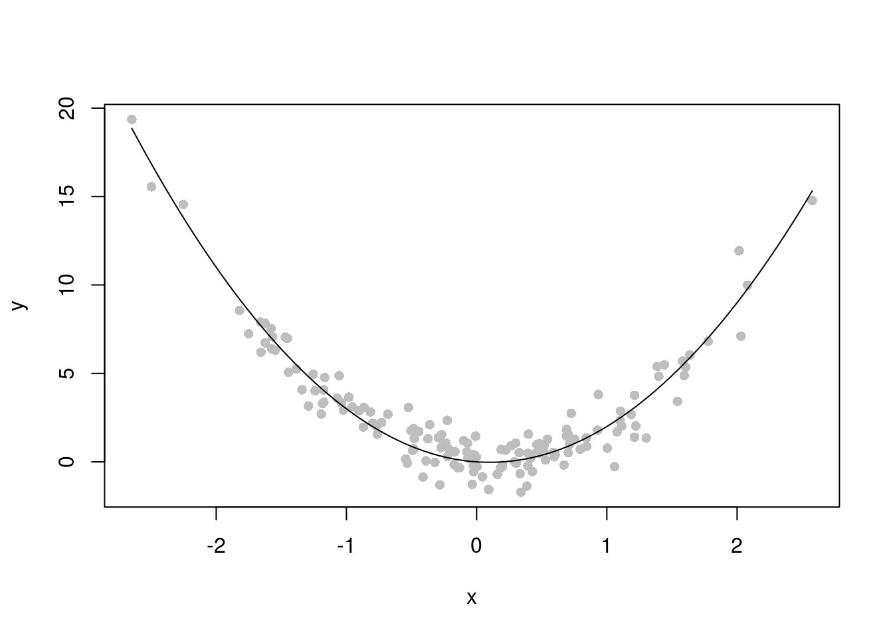
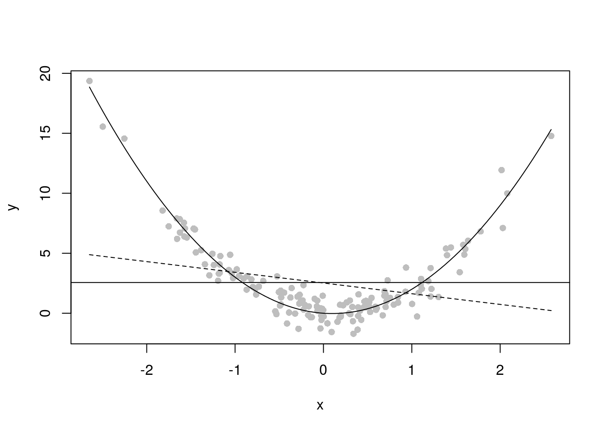

Nous avons illustré le phénomène de surajustement (overfitting en anglais) dans le contexte d’une régression par les knn. Dans cette partie, nous allons étudier le phénomène dit de “overfitting” dans le contexte de sélection de modèle. Nous avons un jeu de données qui semble issu d’une fonction polynomiale et nous allons sélectionner le degré du polynôme pour la régression.
# Examples of training data
# 150 standard-Gaussian X's
ntr <- 150
x = rnorm(ntr)
# Quadratic Y's
y = 2.5*x^2 - 0.5*x + rnorm(ntr)# Initial plot of training data plus true regression curve
plot(x,y, pch=16, col=8)
curve(2.5*x^2-0.5*x,add=TRUE)
plot(x,y, pch=16, col=8)
curve(2.5*x^2-0.5*x,add=TRUE)
y.0 = lm(y ~ 1)
abline(h=y.0$coefficients[1])
d = seq(min(x),max(x),length.out=200)
degree = 1
fm = lm(y ~ poly(x,degree))
assign(paste("y",degree,sep="."), fm)
# Plot them, with different line types
lines(d, predict(fm,data.frame(x=d)),lty=(degree+1))
Ajuster et ajouter les polynômes allant de 1 à 9
Calculer et tracer l’erreur d’apprentissage en fonction de la complexté du modèle (ici degré du polynôme)
Simuler un jeu de données test de taille \(150\) et l’ajouter à la figure précédente (avec une autre couleur)
Calculer l’erreur de prédiction sur le jeu de données test en fonction du degré du polynôme et le comparer à l’erreur d’apprentissage
Répliquer 5 fois : simuler un échantillon test et tracer les erreurs de prédition en fonction du degré du polyôme.
Simuler un jeu de données de taille \(500\), à l’aide d’une validation croisée à \(5\) folds, déterminer le degré optimal du polynôme au sens de l’erreur de prédiction